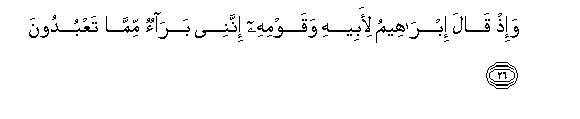

بسم الله الرحمن الرحيم
Sayyid Abul Ala Maududi - Tafhim al-Qur'an - The Meaning of the Qur'an
 43.
Surah Az Zukhruf (The Ornaments of Gold)
43.
Surah Az Zukhruf (The Ornaments of Gold)
It is derived from the word zukhruf-an which occurs in verse 33 of this Surah.
It could not be known from any authentic tradition, but a study of its subject matter shows that this Surah also was sent down in the same period in which the Surahs Al-Mumin, As-Sajdah and Ash-Shura, were sent down. It appears that the revelation of this series of the Surahs began when the disbelievers of Makkah were planning to put an end to the Holy Prophet's life. Day and night they were holding consultations in their assemblies as how to eliminate him, and even an attack on his life also had been made as has been clearly referred to in vv. 79-80.
In this Surah a forceful and severe criticism has been made of the Quraish and the common Arabs creeds and superstitions of ignorance in which they persisted, and their stubbornness has been exposed in a firm and effective way, so that every member of the society, who was reasonable in some degree, should be made to consider the evils in which the community was involved and its tyrannical treatment of the person who was trying to redeem it.
The discourse starts in a way as if to say: "You, by means of your mischiefs, want that the revelation of this Book should be stopped, but Allah has never withheld the appointment of His Prophets and the revelation of His Books because of the mischief of the people, but has destroyed the wicked people, who obstructed the way of His guidance. The same He will do again. A little further in vv. 41-43 and 79-80 the same thing has been reiterated. Though the people who were plotting against his life are meant, the Holy Prophet has been addressed to the effect: "whether you remain alive or not, We will certainly punish the wicked," and the people themselves have been plainly warned to the effect: "If you have decided to take an action against Our Prophet, We too will take a decisive action."
Then, it has been told what is the reality of the religion that the people are following so devotedly and what are the arguments on whose strength they are resisting Muhammad (upon whom be Allah's peace and Blessings).
They themselves admit that the Creator of the earth and heavens and of themselves and their deities is only Allah. They also know and admit that the blessings they are benefiting from, have been bestowed by Allah; yet they insist on making others associates of Allah in His Godhead.
They regard the servants as the children of Allah, and that too daughters, whom they regard as disgraceful for themselves.
They believe that the angels are goddesses; they have carved their images as females; they adorn them with female dresses and ornaments, and call them daughters of Allah: they worship them and invoke them for the fulfillment of their needs. How did they know that the angels were female?
When they are rebuked for these superstitions, they present the pretense of destiny and say :"Had Allah disapproved of these our practices, we could not have worshiped these images, whereas the means of finding out whether Allah had approved of something or not, are His Books and not those things which are happening in the world according to His Will. For under His Will not only idol worship but crimes like theft and adultery, robbery. murder, etc. also are being committed. Can this argument be used to justify as right and proper this commission of every crime and evil is the world?
When it is asked: Have you any other authority, apart from this wrong argument, for the polytheism of yours? They reply, "The same has been the practice since the time of our forefathers." In other words, this in their opinion is a strong enough argument for a creed's being right and true, whereas the Prophet Abraham, descent from whom is the only basis of their pride and distinction, had rejected the religion of his elders and left his home, and he had discarded every such blind imitation of his forefathers, which did not have the support of any rational argument. Then, if these people had to follow their elders only, for this also they selected their most ignorant elders and abandoned their most illustrious elders like the Prophets Abraham and Ishmael (on whom be peace).
When they are asked: "Has ever a Prophet or a Book sent down by God also given this teaching that others beside Allah too are worthy of worship? they present this practice of the Christians as an argument that they took Jesus son of Mary as son of God and worshiped him; whereas the question was not this whether the community of a Prophet had committed shirk or not, but this whether a Prophet had himself taught shirk. Jesus son of Mary had never said that he was son of God and that the people should worship him. His own was the same teaching which every other Prophet had given "My Lord as well as your Lord is Allah: so worship Him alone."
They were disinclined to believe in the Prophethood of the Holy Prophet because he was neither a rich man nor a person of high worldly position and rank. They said "Had Allah willed to appoint a prophet among us, He would have appointed one of the great men of' our two cities (Makkah and Taif). On that very basis, Pharaoh also had looked down upon the Prophet Moses and said: "If Allah, the King of the heavens, had to send a messenger to me, the king of the earth, He would have sent him with bracelets of gold and a company of angels in attendance. Where from has this mendicant appeared I am superior to him, for the kingdom of Egypt belongs to me, and the canals of the River Nile are flowing under my control. What is the status of this man as against me? He has neither wealth nor authority."
Thus, after criticizing each practice of ignorance of the disbelievers and rejecting it with rational arguments, it has been pointed out: "Neither has God any offspring, nor are there separate gods of the earth and heavens, nor is there any intercessor who may be able to protect from His punishment those who adopt deviation knowingly. Allah is far above this that He should have children. He alone is the God of the whole Universe: all others are His servants and not associates in His attributes and powers, and only such men can intercede with Him, who are themselves followers of the Truth and they also can intercede only for those who may have adopted obedience of the Truth in the world."

In the name of Allah, the Compassionate, the Merciful.

[1-4] Ha-Mim. By this lucid Book, We have made it an Arabic Qur'an so that you (O people) may understand it.1 And, in fact, it is inscribed in Umm al-Kitab,2 a Book truly sublime and full of wisdom with Us.3

[5-8] Now, should We despair and stop sending this Admonition to you only because you are a people who have transgressed (all limits)?4 Many a Prophet have We sent among the ancient peoples, too. Never did it so happen that a Prophet came to his people and they did not mock him.5 So, We destroyed them though they were much stronger than these in might; there have gone before the examples of the ancient peoples.6
[9-14] If you ask them, "Who has created the heavens and the earth?" they will surely say, "The Almighty, the All-Knowing One has created them. " He it is Who made this earth a cradle for you7 and made in it paths8 for you so that you may be guided to your destinations.9 Who sent down water from heaven in due measure10 and revived thereby the dead earth-even so shall you be brought out from the earth.11 Who created all these pairs12 and Who made ships and animals as conveyance for you to ride on their back, so that when you sit on them, you may remember your Lord's favor, and say, "Glorified is He Who has subjected them to us, otherwise we could not have brought them under control,13 and one day we have to return to our Lord."14
[15] (In spite of knowing and recognizing all this) these people have made some of His servants to be part of Him.15 The fact is that man is manifestly ungrateful.

[16-18] Did Allah choose from His creation daughters for Himself and blessed you with sons? whereas when the birth of the offspring whom they ascribe to the Merciful God, is announced to any of them, his face grows black and he is filled with grief.16 Would they assign to Allah the offspring who is brought up among ornaments and is even unable to make itself clear in disputation?17
[19] They have regarded the angels, who are themselves servants of the Merciful God,18 as females. Have they seen them in person?19 Their evidence will be recorded and they will be called to account for it.

[20-25] They say, "Had the Merciful God willed (that we should not worship them), We would never have worshiped them."20 They do not at all know the fact of the matter: they only conjecture. Did We give them a Book before this of which they hold an authority (for their angel-worship)?21 Nay! but they say, "We found our forefathers on a way and we are only walking in their footsteps."22 Even so, whenever before you We sent a Warner to a habitation, its people of means said, "We have found our forefathers on a way and we are only following in their footsteps."23 Every Prophet asked them,” Will you still go on following the same old way even if I guide you to a more right way than that you found your forefathers following?" They replied, "We disbelieve the religion with which you have been sent." Consequently, We took vengeance on them. Just consider what was the end of those who denied (the Truth)!

[26-30] Recall the time when Abraham had said to his father and his people,24 "I have nothing to do with those whom you worship. I worship only Him Who created me: He alone will guide me."25 And Abraham left behind the same Word26 among his descendants so that they should turn to it.27 (In spite of that when the people started worshiping others, I did not annihilate them), but I went on providing sustenance of life to them and to their forefathers until the Truth came to them and a Messenger who expounded everything clearly28 But when the Truth came to them, they said, "This is a sorcery29 and we refuse to believe in it."
[31-32] They say, "Why was not this Qur'an sent down to one of the great men from the two cities?"30 Is it they who distribute the mercy of your Lord? It is We Who have distributed the means of their sustenance in the life of this world and raised some of them above others in ranks so that they may take one another in service.31 And your Lord's Mercy is far greater in worth than the wealth which (their chiefs) are amassing.32
[33-35] But for the fear that all mankind would follow the same way, We would have made for those who disbelieve in the Merciful God, houses with roofs of silver and gold, and stairways by which they go to upper chambers, and their doors and their couches on which they recline (all of silver and gold).33 But all this is merely a provision of this worldly life; and the Hereafter with your Lord is only for the righteous.
[36-39] He who does not heed the admonition of the Merciful,34 We set a satan upon him, and he becomes his companion. These satans hinder such people from the right way while they think that they are guided aright. Ultimately, when he comes to Us, he will say to his satan companion, "would that between me and you there were the distance of the East and the West: you turned out to be a most evil companion." Then it will be said to them, "When you have done wrong, it will avail you nothing today as you and your satans are partners in the same torment."35
[40-45] Now, O Prophet, will you make the deaf to hear you, or show the way to the blind and those who are involved in manifest deviation?36 Now We have to punish them,whether We take you away from the world, or let you see their end, which We have promised them: We have full power over them.37 So, hold fast to the Book that has been revealed to you: you are surely on the Straight Way.38 The fact is that this Book is a great honor for yon and your people, and soon you shall be called to account for it.39 You may ask all other Messengers whom We sent before you if We ever had appointed any other gods to be worshiped besides the Merciful God.40

[46-53] We41 sent Moses with Our Signs42 to Pharaoh and his chiefs, and he said to them, "I am a Messenger of the Lord of the worlds." Then? when he showed Our Signs to them, they laughed at him. We showed them Sign after Sign, each greater than the one preceding it, and We seized them with the torment that they might give up their attitude.43 Whenever a torment visited them, they said, "O sorcerer, pray to your Lord for us by virtue of the appointment you hold from Him: we shall surely take the right way." But whenever We removed the torment from them, they would go back on their word.44 One day Pharaoh proclaimed among his people,45 "O my people: Is not the kingdom of Egypt mine? And are not these canals flowing beneath me? Can you not see who is better:46 I or this contemptible, wretched person,47 who can hardly express himself clearly?48 Why were not bracelets of gold sent down on him, or a company of angels as attendants?"49
[54-56] He took his people to be light, and they obeyed him, for they were indeed a sinful people.50 At last, when they had annoyed Us, We took vengeance on them and drowned them all together, and made them a precedent and an object lesson for the later generations.51
[57-65] And when the son of Mary was cited as an example, your people raised a clamor at it, saying, "Are our gods better, or is he?"52 They have cited this example to you only in the spirit of dispute. The fact is that they are a quarrelsome people. The son of Mary was no more than a servant whom We favored and made an example of Our power for the children of Israel.53 If We please We can create angels from you54 to succeed you in the earth. And he is, in fact, a Sign of the Hour;55 therefore, do not have any doubt about it, and follow Me: this is the Straight Way. Let not Satan hinder you from this.56 He is your open enemy. And when Jesus had come with clear Signs, he had said, "I have brought wisdom to you, and have come to make plain to you the reality of those things in which you differ: so fear Allah and follow me. The fact is that Allah is my Lord and your Lord, too. Worship Hun alone: this is the Straight Way."57 But (in spite of his clear teachings) the sects disagreed among themselves.58 So, woe to those who committed evil from the punishment of a painful Day.

[66-78] Do these people now only await the Hour (of Resurrection) that it should come upon them suddenly while they are unaware? When the Day comes all friends shall become enemies of one another except the righteous.59 On that Day it will be said to those who had believed in Our Revelations and surrendered themselves, "O My servants ! Today you have nothing to fear, nor will there be any cause for you to grieve. Enter Paradise, you and your wives.60 You will be made happy!" There they shall have platters and cups of gold passed round to them and there they shall have everything that the souls can desire and the eyes can delight in. It will be said to them, "You shall live here for ever. You have inherited this Paradise by virtue of the deeds you did in the world. You have abundance of fruit here, which you will eat." As for the criminals, they shall endure for ever the torment of Hell; their punishment will never be lightened for them, and there they shall remain, despairing. We did not wrong them, but they themselves were the wrongdoers. They will call out, "O Malik,61 let your Lord put an end to us!" He will answer, "Here you must remain! We had brought the Truth to you, but most of you abhor the Truth."62
[79-80] Have they decided to contrive a plan?63 Well, we too, shall contrive. Do they think that We do not hear their secret talk and their whisperings? We hear everything and Our angels at their sides are recording it.

[81-83] Say to them, "If the Merciful really had a son, I would be the first to worship him."64 Exalted is the Ruler of the heavens and the earth, Lord. of the Throne, above what they ascribe to Him! Well, let them remain absorbed in their falsehoods and sport, till they see that Day of theirs with which they are being threatened.
[84-85] He alone is God in heavens anal God on earth: He is the All- Wise, the All-Knowing.65 Highly blessed is He to Whom belongs the Kingdom of the heavens and the earth and of all that lies between them.66 He alone has the knowledge of the Hour of Resurrection, and to Him you shall all be returned.67
[86] Those whom they call upon beside Him have no power of intercession except that one may testify to the Truth by virtue of knowledge.68

[87-88] And if you ask them who created them, they will surely say, "Allah."69 Whence then are they being deluded? By this word of the Messenger: "O my Lord, these are a people who would not believe."70
[89] Well, O Prophet, bear with them and say, "Peace to you!"71 Soon they shall know.
1The object of taking an oath by the Qur'an is to impress this fact: "We are the Author of this Book and not Muhammad (upon whom be Allah's peace)," and the attribute of the Qur'an chosen for the oath is that it is a "lucid Book". To swear by the Qur'an itself with its this attribute in order to impress that the Qur'an is Divine Word by itself implies this: "O people, this is an open Book before you. Read it intelligently. Its clear and un-ambiguous themes, its language and literary style, its teaching which distinguishes the truth from falsehood, all arc testifying to the fact that none but the Lord of the Universe could be its Author. " Then the sentence: '"We have made it an Arabic Qur'an so that you may understand it." has two meanings:
(1) "It is not in any foreign tongue but in your own language; therefore, you can have no difficulty in assessing its value and worth. Had it been in a non-Arabic language, you could have offered the excuse that you could not determine its being Divine, or otherwise, for you did not understand it. But you cannot offer this excuse about this Arabic Qur'an. Its each word is clear to you: its each passage and discourse, both in language and in theme, is plain for you. Now you may see it for yourself whether this could be the word of Muhammad (upon whom be Allah's peace) or of some other Arab."
(2) "We have sent this Book in Arabic because We are addressing the Arabs, who can only understand an Arabic Qur'an. The person who disregards this expressly rational ground for sending down the Qur'an in Arabic and regards it as the word of Muhammad (upon whom be Allah's peace) instead of Divine Word only because Muhammad's mother tongue is also Arabic, commits a grave injustice. " (To understand this second meaning, please see Surah Ha-Mim As-Sajdah: 44 and its E.N.'s).
2"Umm al-Kitab": the "Original Book": the Book from which all the Books sent down to the Prophets have been derived. In Surah AI-Waqi`ah the same thing has been described as Kitab-um-Maknun (the hidden and preserved Book) and in Surah AI-Buruj 22 as Lauh-i Mahfuz (the Preserved Tablet), that is, the Tablet whose writing cannot be effaced, which is secure from every kind of interference. By saying that the Qur'an is inscribed in Umm al-Kitab, attention has been drawn to an important truth. Different Books had been revealed by Allah in different ages to different Prophets for the guidance of different nations in different languages, but all these Books invited mankind to one and the same Faith: they regarded one and the same thing as the Truth; they presented one and the same criterion of good and evil; they propounded the same principles of morality and civilization; in short, they brought one and the same Din (Religion). The reason was that their source and origin was the same, only words were different; they had the same meaning and theme which is inscribed in a Source Book with Allah, and whenever there was a need, He raised a Prophet and sent down the same meaning and subject-matter clothed in a particular diction according to the environment and occasion. Had Allah willed to raise the Prophet Muhammad (upon whom be His peace) in another nation instead of the Arabs, He would have sent down the same Qur'an in the language of that nation. In it the meaning and content would have been expressed according to the environments and conditions of the people and land; the words would have been different and the language also different but the teaching and guidance the same basically, and it would be the same Qur'an though not the Arabic Qur'an. This same thing has been expressed in Surah Ash-Shu`ara, thus: "This (Book) has been revealed by the Lord of the worlds. The trustworthy Spirit has come down with it upon your heart so that you may become one of those who are (appointed by God) to warn (the people) in plain Arabic language; and this is also contained in the scriptures of the former peoples." (vv. 192-196). (For explanation, see Ash-Shu`ara: 192196 and the E.N.'s on it).
3This sentence is related both to Kitab-i mubin and to Umm al-Kitab. Thus, it is in praise of both the Qur'an and the Original Book from which the Qur'an has been derived. This praise is meant to impress the fact that if a person does not recognize the true worth of this Book and does not benefit from its wise teachings because of his own folly, it would be his own misfortune. If someone tried to degrade it and found fault with it, it would be his own meanness. It cannot become worthless on account of someone's lack of appreciation of it, and its wisdom cannot be eclipsed by anyone's throwing dust at it. This is by itself a glorious Book, which stands exalted by its matchless teaching, miraculous eloquence, faultless wisdom and the sublime personality of its great Author. Therefore, none can succeed in minimizing its value and worth. In verse 44 below the Quraish in particular and the Arabs in general have been told that the revelation of the Book for which they are showing such lack of appreciation had provided them a unique opportunity of honor, which if they lost, would subject them to a severe accountability before God. (Please see E.N. 39 below).
4In this one sentence the whole history that had taken place since the time the Holy Prophet Muhammad (upon whom be Allah's peace) had proclaimed to be a Prophet till the revelation of these verses during the past few years has been compressed. This sentence depicts the following picture: A nation has been involved in ignorance, backwardness and depravity for centuries. Suddenly, Allah looks at it with favor. He raises in it an illustrious guide and sends down His own Word to take it out of the darkness of ignorance so that it is aroused from slumber, it gives up superstitions of ignorance and it becomes aware of the truth and adopts the right way of life. But the ignorant people of the nation and the tribal chiefs turn hostile to the guide, and try their utmost to defeat him and his mission. With the passage of time their hostility and mischief go on increasing; so much so that they make up their mind to kill him. At this, it is being said: "Should We stop making any efforts to reform you because you are proving to be un-worthy people? Should We withhold sending down this Admonition, and leave you lying in the same wretched state in which you have been lying since centuries ? Do you really think that should be the demand of Our Mercy ? Have you ever considered what doom you would meet when you have turned down the bounty of Allah and persisted in falsehood after the truth has come before you?"
5That is, if such absurdity and senselessness had barred the sending of a Prophet or a Book, no Prophet would ever have come to any nation nor a Book sent to it.
6That is, the result of the senselessness of some particular people could not be that the entire mankind should be deprived of the guidance of the Prophethood and the Book, but its result always has been that the worshippers of falsehood who, being drunk with the pride of power, did not desist from mocking the Prophets, were ultimately destroyed. When Allah's wrath descended even the people, who possessed thousands of times greater power than that possessed by the puny chiefs of the Quraish, were crushed to annihilation like mosquitoes and fleas.
7At other places the earth has been described as a bed, but here as a cradle. That is, just as a child lies resting in its cradle, so is this great globe meant to be a place of rest for you, which is suspended in space, which is spinning on its axis at a speed of 1,000 miles an hour, which is revolving around the sun at a speed of 66,000 miles an hour. Its interior is so intensely hot that it can melt the stones and it manifests its power sometimes in the form of volcano eruptions. But, in spite of that, the Creator has made it so tranquil that one sleeps on it. in fill peace and there is no jerk whatever. One lives on it and does not at all feel that this globe is suspended and one is hanging from it with one's head pointing downward. One moves about on it with satisfaction and never thinks that one is riding on a vehicle moving faster than a bullet. You dig it at will and turn it inside out and beat it as you like to obtain your sustenance, whereas a little shaking of it in an earthquake makes you feel what a terrible giant it is, which Allah has subdued for you. (For further explanation, sec AI-Naml: 61 and E.N. 74 on it).
8The passes in the mountains and the rivers in the hill and plain regions are the natural paths, which Allah has provided on the surface of the earth. Man has spread on, the earth by means of these. If the mountainous ranges had been created erect, without a crevice, and there had been no rivers and streams, man would have been confined to the same areas where he was born. Then, Allah through another grace has not made the whole surface of the earth uniform in nature, but has created different marks of distinction by means of which man recognizes different lands and feels the difference between one land and another. This is the second important means by which man became able to move about on the earth. This blessing can be appreciated by the one who has had a chance of going on a vast desert, where for thousands of milts the earth is without any landmarks and one does not know where one has reached and where one has to go.
9This sentence gives two meanings simultaneously:
(1) "That by means of these natural paths and land-marks you may find your way and reach the place you want to reach: " and
(2) "that you may obtain guidance from the observation of this craftsmanship of Allah Almighty: may reach the underlying reality and understand that this system of the earth is not functioning haphazardly, nor has been devised by many gods jointly, but there is one All-Wise Creator, Who has made these paths in the hills and on the plains in view of the needs and requirements of His creatures, and has given each region of the earth a different form in countless different ways by means of which man can distinguish one region from the other.
10That is, "For each region He has ordained an average measure of the rain, which falls year after year for long ages regularly. It does not happen that an area may have two inches of the rainfall one year and 200 inches of it the next year. Then He spreads the rainfall over different places in different times in such a way that it becomes beneficial on the whole for the products of the earth. And this is also His wisdom that He has deprived some parts of the earth of the rainfall almost wholly and turned them into dry, barren deserts, and in some other parts, He sometimes causes famines w occur and sometimes sends torrential rains so that man may know what a great blessing the rain and its general regularity is for the populated areas, and he may also remember that this system is under the control of another power, whose decrees cannot be changed by anyone. No one has the power that he may change the general average of the rainfall of a country, or effect a variation in its distribution over vast areas of the earth, or avert an impending storm, or attract the displeased clouds towards one's own land and compel them to rain." (For further explanation, see AI Hijr: 21-22, Al-Mu'minun: 18-20).
11Here, the birth of vegetation in the earth by means of water has been presented as an argument for two things simultaneously:
(1) That these things are happening by the power and wisdom of One God; no one else is His associate in these works; and
(2) that there can be life after death, and it will be. (For further explanation. see An-Nahl: 65-67, Al-Hajj: 5-7, An-Naml: 60, Ar-Rum: 19, 24; Fatir: E.N. 19 and Ya Sin: E.N. 29).
12Pairs here does not imply only pairs of men and women among human beings and of males and females among animals and vegetation, but there are countless other things which the Creator has made as matching partners of each other and by whose coming together and combination new and ever new things come into being in the world. For example, among the elements, some can be combined with others and some cannot be. The combination of these which can combine is resulting into various compositions, e.g. the negative and positive charges in electricity are the matching partners of each other and their mutual attraction is causing wonderful things to happen in the world. If man considers the structure and the mutual relationships and the different forms of cooperation and the results of the combination of this and other countless pairs which Allah has created among countless of His creations. He cannot help testifying to the truth that this great workshop of the world is the creation of one and only one Almighty, All-Wise Designer, and is functioning only under His care and control, Only a man of mean intelligence could suppose that all this happened, and is happening, without a Wise Being, or there is the possibility in it of the agency and interference of more gods than one.
13That is, "Only man from among all the creatures of the earth was not given this power by Allah to use boats and ships and animals as conveyance so that he may be loaded on them like bags of grain and should never think as to who it is who created possibilities for him to run boats in the mighty oceans, and who created some animals of the countless kinds of animals, with a nature that they become his servants in spite of being far stronger than him in power, and he rides on them and drives them wherever he likes. To benefit by these blessings and to forget the Benefactor is a sign of the heart's becoming dead and the conscience's being insensitive. For when a man endowed with a living heart and a sensitive conscience will sit on these conveyances, he will be filled with the feelings of the blessings and with the gratitude for it, and will cry out: "Glorified is the Being Who subjected these things to me: Glorified is He from that another should be His associate in His Being and attributes and powers: Glorified is He and free from the weakness that He should become helpless of performing the functions of His Godhead by Himself and should stand in need of other associate gods: Glorified is He that I should make another an associate with Him in rendering thanks for these blessings."
The best practical commentary of the intention and meaning of this verse are the words that the Holy Prophet (upon whom be Allah's peace) used to pronounce at the time he sat on the conveyance. Hadrat 'Abdullah bin 'Umar says that whenever the Holy Prophet sat on a conveyance for a journey, he would pronounce Allah-u Akbar thrice, then would recite this verse, and then pray: "O God, I implore You to grant me in this journey the grace of goodness and piety and such acts as may please You. O God, make the journey easy and roll up the long distance for us; O God, You alone are the Companion during the journey and Guardian of the family in ow absence. O God, take care of us during, the journey and our household in ow absence. " (Musnad Ahmed, Muslim, Abu Da'ud, Nasa'i, Darimi, Tirmidhi).
Hadrat 'Ali says: Once the Holy Prophet put his foot in the stirrup with bismillah, and then, after riding, said: Al-,hamd-u lillah, subhan-alladhi sakhkhara lana hadha . . . . , then pronounced al-,hamd-u-lillah thrice, and Allah-u Akbar thrice; then said: Subhana-ka, la-ilaha ills anta, qad zalamtu nafsi fagh fir-li. Then he laughed. I asked: What made you laugh. O Messenger of Allah? He replied: When a servant says: Rabb-ighfir-li, Allah Almighty is very pleased with this. He says: My servant knows that there is none beside Me who can forgive sins." (Ahmed, Abu Da'ud, Tirmidhi, Nasa'i, and others)
Abu Mijlaz says: "Once I rode on my animal and recited this verse: Subhan-alladhi sakhkhara lane hadha . . . ; Hadrat Hasan (may Allah be pleased with him) said: Have you been commanded to say so? I said: What should I say then? He replied: Say, thank God, Who guided us to Islam: Thanks to Him, Who did us a favor by sending Muhammad (upon whom be Allah's peace): Thanks to Him, Who admitted us into the best community that has been raised for the people; then recite this verse." (Ibn Jarir, Ahkam al-Qur'an by Jassas)
14That is, "While embarking on every journey one should remember that there is ahead a longer and final journey also. Besides there is the possibility in the use of every conveyance that an accident may turn that very journey into one's last journey; therefore, every time one should remember one's return to one's Lord so that if something untoward happens, one does not die unawares.
Let us pause here for a while and consider the moral results of this teaching. Can one imagine that a person who while sitting on a conveyance starts his journey consciously with Rill remembrance of Allah and his return and accountability before Him, would commit sins and injustices and tyrannies on the way? Can a person think or utter these words from his mouth when he intends to go to meet a prostitute, or to visit a club for the purpose of drinking and gambling? Can a ruler, or a government official, or a merchant who has stepped out of his house with such thoughts and such words at his lips, usurp the rights of others when he reaches his destination? Can a soldier utter these words while boarding his aircraft or tank when he goes out to shed blood of the innocent and deprive the weak of their freedom? If not, then this one thing alone is enough to bar every movement undertaken for the commission of a sin.
15"To make part of Allah" implies declaring a servant of Allah His offspring, for an offspring inevitably is homogeneous with and a part of the father's body, and regarding somebody as Allah's son or daughter means that he or she is being made a partner in Allah's Being. Besides, another form of making a creature a part of Allah is that it should be regarded as possessor of the attributes and powers as are specifically Allah's own, and it should be invoked under the same concept, or rites of worship performed before it, or its sanctities observed and regarded as imperative and binding, for in that case man divides divinity and providence between Allah and His servants and hands over a part of it to the servants.
16Here, the folly of the polytheists of Arabia has been fully exposed. They said that the angels were the daughters of Allah. They had carved out their images as females, and these were their goddesses whom they worshiped. About this Allah says: In the first place, in spite of knowing and recognizing that the Creator of the earth and heavens is Allah and it is He Who has made this earth a cradle for you and it is He Who sends down the rain from the sky. and it is He Who has created these animals for your service, yet you have taken others as gods beside Him, whereas those whom you serve as deities are not God but creatures of God. Then, further more, you have made some of the servants associates of Allah not only in His attributes but in His Being as well, and invented the creed that they were Allah's offspring. Then, not resting content with this, you assigned to Allah that kind of the offspring which you regard as disgraceful for your own selves: When a daughter is born in your house, your face grows dark, you feel distressed, and sometimes you bury her alive. This offspring you assign to Allah and reserve for yourselves the sons, whom you regard as a source of joy and pride. Even then you claim that you believe in Allah.
17In other words, You have assigned to Allah the offspring that is by nature delicate, weak and frail, and adopted for yourselves the offspring that is bold, courageous and fearless.
This verse shows permissibility of the ornaments for the women, for Allah has mentioned the ornaments as a natural thing for them. The same is also confirmed by the Hadith. Imam Ahmad, Abu Da'ud and Nasa'i have related on the authority of Hadrat `Ali that the Holy Prophet took silk in one hand and gold in the other and said that both were forbidden to be used in dress by the men of his Ummah. Tirmidhi and Nasa'i have related from Hadrat Abu Musa Ash`ari a tradition, saying that the Holy Prophet said: "Silk and gold have been forbidden for the men but made lawful for the women of my Ummah." `Allama Abu Bakr al-Jassas has discussed this question in his Ahkam ai-Qur'an and related the following traditions:
Hadrat 'A'ishah says: Once Usamah, son of Zaid bin Harithah, was hurt and started bleeding. The Holy Prophet loved him like his own children. He sucked his blood and spat it out, and cheered him saying, "Had Usamah been a daughter we would have adorned him with ornaments! Had Usamah been a daughter, we would have dressed him in fine clothes !"
Hadrat Abu Musa Ash'ari has related that the Holy Prophet said: 'Wearing of silken clothes and ornaments of gold is unlawful for the men of my Unmah but lawful for the women. " .
Hadrat 'Amr bin `As has related: `Once two women came before the Holy Prophet, and they were wearing bracelets of gold. He said: Would you like that Allah should make you wear bracelets of the fire instead of these? They replied that they would not. Thereupon he said: Pay their dues, i.e. the zakat due on them. "
Hadrat `A'isha has stated that there is no harm in wearing the ornaments if the zakat due on them is paid.
Hadrat 'Umar wrote to Hadrat Abu Musa Ash'ari: Order the Muslim women who live in the areas under your administrative control that they should pay the zakat dues on their ornaments.
Imam Abu Hanifah has related the following traditions on the authority of 'Amr bn Dinar: Hadrat 'A'ishah had arranged ornaments of gold for her sisters and Hadrat 'Abdullah bin 'Umar for his daughters.
After citing all these traditions 'Allama Jassas writes: "The traditions that have been related from the Holy Prophet and the Companions about the permissibility and lawfulness of gold and silk for the women are better known and more common than those that are there about their unlawfulness, and the above . verse also points to their lawfulness. Then the practice of the Muslims also from the time of the Holy Prophet and his Companions till our time (i.e. till the latter part of the 4th century of hijrah) has been the same, and no one ever objected to it. In such matters, no objection can be admitted on the basis of the isolate reports (Akhbar ahab)."
18That is, who are fret from this that they should be males or females.
19Another translation can be: "were they present at the time of their creation?"
20This was their reasoning from destiny to cover up their deviation and error, and this has been the argument of the wrong-doers in every age. They argued that their worshiping the angels became possible only because Allah allowed them to do so. Had He not willed so they could not have done it; and then it had been a practice with them for centuries and no torment from Allah had descended on them, which meant that Allah did not disapprove of their this practice.
21It means this: "These ignorant people think that whatever is happening in the world has the approval of Allah for it, because it is happening according to His will. This argument, however, is wrong. For it is not only shirk which is being committed in the world, but countless other crimes like stealing, robbery, murder, bribery, etc. also are taking place, which nobody likes. Then, can it be said by the same reasoning that all such acts are lawful and good only because Allah is letting them happen in His world, and when He allows them to happen, He must have approved of them also? The means of knowing what Allah likes and what He hates are not the events that are happening in the world, but the Book of Allah, which comes through His Messenger and in which Allah Himself states as to what beliefs, what deeds and what morals He likes and what He dislikes. If these people have a Book, which came before the Qur'an, and which tells that Allah has appointed the angels also as deities beside himself and that they should worship them also, they should cite it." (For further explanation, see Al-An'am: 107 112, 137, 148-149; AI-A'raf: 28; Yunus: 99; Hud: 118-119; Ar-Ra'd: 31; An-Nahl: 9, 35-36, 93; and E.N. 20 of Az-Zumar and E.N. 11 of Ash-Shura).
22That is, "They have no authority of any divine book; the only authority they have is that it has been the practice since the time of their forefathers: therefore, they have taken the angels as goddesses in imitation of them."
23Here, the point worth consideration is why the well-to-do people of every community only have resisted the Prophets and upheld the imitation of their forefathers in every age. Why have they alone been in the forefront to oppose the Truth and to endeavor to maintain the established falsehood and to beguile and incite the common people against them ? Its basic causes were two:
(1) The well to-do and affluent people are so absorbed in making and enjoying the world of their own that they are not inclined to bother themselves about the useless debate (as they assume it to be) between the Truth and falsehood. Their love of ease and mental lethargy renders them so heedless of religion and conservative that they want the established order, no matter whether it is based on truth or falsehood, to retrain in force so that they do not have to take the trouble of thinking about the new order at all for themselves.
(2) Their interests become so dependent on the established order that when they get the first glimpse of the order presented by the Prophets they start feeling that if it came, it would not only put an end to their leadership but also would deprive them of the freedom to consume the lawful and commit the unlawful. (For further details, sec AI-An`am: 103; Al-A'raf: 66-70. 75, 88 109, 127; Hud: 27-28; Bani Isra`il : 16; AI-Mu'minun: 24-33, 46; Saba: 34 and the corresponding E.N.'s).
24For details, sec AI-Baqarah 124-133, AI-An'am 74-84, Ibrahim: 3541, Maryam: 41-50, Al-Anbiya': 51-73, Ash-Shu'ara: 69-89, AI-'Ankabut: 1627, As-Saaffat: 83-100 and the corresponding E.N `s.
25In these words not only did the Prophet Abraham state his creed but also gave the argument for it. The reason for not having any connection with the other deities is that they neither have created nor they give right guidance in any matter, nor they can; and the reason for having a connection only with Allah Almighty is that He alone is the Creator and He alone gives, and can give, the right guidance to mankind.
26"The same word" : the word that none but the Creator is worthy of worship in the world.
27That is, "Whenever they swerve from the right path, this word should be there to guide them so that they return to it again. " This event has been mentioned here in order to expose the foolishness of the disbelieving Quraish and to put them to shame, as if to say: "When you have adopted obedience of your ancestors, ,you have selected the most depraved of them for the purpose instead of the most righteous and illustrious, who were the Prophets Abraham and Ishmael (peace be upon them). " The basis of the leadership of the Quraish in Arabia was that they were the descendants of the Prophets Abraham and Ishmael and were the attendants of the Ka'bah built by them. Therefore, they should have followed them and not their ignorant forefathers who had given up the way of the Prophets and adopted polytheism from the neighboring idol-worshipers. Furthermore, by mentioning this event another error of those people has been pointed out. That is, if the blind imitation of the fore-fathers, without the distinction of good and evil, had been the right thing, the Prophet Abraham should have done so in the first instance. But he had plainly told his father and his people that he could not follow their creed of ignorance in which they had abandoned the Creator and made those imaginary beings their deities, who were not the creator. This shows that the Prophet Abraham did not believe in following the forefathers, but his creed was that before one followed the forefathers one should see whether they were following the right way or not, and if it became known by reason that they were following the wrong way, one should give up their way and adopt the way that was proved right.
28Another meaning of the word "rasulum-mubin can be: "A Messenger whose being a Messenger was obvious and apparent: whose lift before and after the Prophet hood clearly testified that he was certainly Allah's Messenger."
29For explanation, see Surah. Al-Anbiya' : 3 and E.N. 5 on it, and E.N. 5 of Surah Suad.
30"The two cities": Makkah and Ta`if. What the disbelievers meant was: "Had Allah really willed to send a messenger and intended to send down a book to him, He would have selected a great man from our these central, cities for the purpose. For Allah could not have selected for this great mission a person who was born an orphan, who did not inherit much property, who passed his youth by tending goats, who even at present earned his living through business with his wife's money, and who was neither the chief of a tribe nor the head of a family. Were not there well known chiefs like Walid bin Mughirah and 'Utbah bin Rabi'ah in Makkah, and nobles like `Urwah bin Mas'ud, Habib bin 'Amr, Kinanah bin 'Abd-i -'Amr and Ibn 'Abd Yalil in Ta'if? This was their reasoning. in the first instance, they were also not inclined to believe that a man could be a Messenger. But when the Qur'an refuted this misconception by argument and reason and they were told that in the past only men had come as Messengers and a man only could be a Messenger for the guidance of the people, and not another kind of being and the Messenger who came did not descend, suddenly from heavens, but were born in the same ordinary dwellings, walked about in the streets, had children and families and stood in need of food and drink (see AnNahl: 43, Bani Isra'il: 94-95, Yusuf: 109, Al-Furqan: 7, 20; Al-Anbiya: 7-8; Ar-Ra'd: 38), they took this stand, saying: "Well, even if a human being, he should be a big man, who should be wealthy, influential and awe-inspiring and having a large following. How could Muhammad bin `Abdullah (upon whom be Allah's peace) be fit for this appointment?"
31This is the answer to their objection, which briefly mentions many important things:
First, it asks: "Since when do these people become responsible for distributing the mercy of your Lord ? Is it for them to decide whom Allah should favor with His mercy and whom He should not ? (Here, by Allah's mercy is implied His general mercy from which everyone has a share).
Second, Allah says: Prophethood is a great blessing: We have even kept the distribution of the common means of life in the world in Our own hand, and have not entrusted it to anyone else. We create someone beautiful and another ugly, someone with a sweet voice and another with a harsh voice, someone robust and strong and another weak and frail, someone intelligent and another dull, someone with a strong memory and another forgetful, some with healthy limbs and another a cripple, or blind or deaf and dumb, someone in a rich family and another among the poor, someone in an advanced country and another in a backward community. No one can do anything about this destiny concerning birth. One is compelled to be what We have made him. And it is in no one's power to avert the impact one's circumstances of birth have on one's destiny. Then it is We our self Who arc distributing provisions, power, honor, fame, wealth, government, etc. among men. No one can degrade the one whom We have blessed with good fortune, and no one can save from ruin the one whom We have afflicted with misfortune. All plans and schemes of man become ineffective against Our decrees. In this universal Divine System, therefore, how can these people decide as to whom should the Master of the universe make His Prophet and whom He should not?
Thirdly, "An abiding principle that We have kept in view in this Divine System is that everything should not be given to one and the same person, or everything should not be given to everybody. If you look around carefully, you will see that great differences exist between the people in every respect. We have given one thing to one person but deprived him of another, and given the same to another one. This is based on the wisdom that no human being should become independent of others, but everyone should remain dependent on the other in one way or the other. Now if would be foolish on your part to think that We should have given the Prophet hood also to the same person whom We had blessed with wealth and nobility. Likewise, will you also say that wisdom, knowledge, wealth, beauty, power, authority and all other excellences should be assembled in one and the same person, and the one who has not been given one thing, should not be given anything else?"
32"Your Lord's mercy": the Prophet hood. It means: "Your leaders and chiefs whom you regard as big people because of their wealth and dignity and chief ship, arc not worthy of this wealth, which has been given to Muhammad bin 'Abdullah (upon whom be Allah's peace). This wealth is far superior to that and for this the criterion is different. If you think that every noble and rich man is worthy of becoming a prophet, it would only show your own thinking. Why do you expect Allah to be so ignorant and simple?"
33That is, "This silver and gold whose possession by somebody is the highest blessing and the very climax of good fortune in your sight, is so base and contemptible a thing in the sight of Allah that had there been no danger of all human beings being inclined towards unbelief, He would have made every disbeliever's house of gold and silver. Since when has the abundance of this worthless commodity become proof of man's nobility and his piety and his spiritual purity? This kind of wealth is even found in the possession of those foul and wicked people whose filthy characters make the whole society stink. And this you have made the criterion of man's greatness of character. "
34"Dhikr of the Merciful" : His remembrance as well as His admonition and the Qur'an.
35That is, "In this there is no aspect of consolation for you that the one who misguided you is being punished, for you also are receiving the same punishment for accepting and following the deviation. "
36It means to say: "Pay attention to those who are inclined to listen and have not closed their eyes to the realities, and do not consume yourself in showing the way to the blind and making the deaf to hear, nor consume yourself with the grief as to why your near and dear ones are not coming to the right path, and why they are making themselves worthy of Allah's torment."
37This thing can be understood fully only by keeping in view the background in which it was said. The disbelievers of Makkah thought that the person of the Prophet Muhammad (upon whom be Allah's Peace) had become a source of trouble for them. If they could somehow get rid of him, matters would become normal. On the basis of this evil thought they were holding consultations day and night and planning to kill him. At this, Allah addresses His Prophet so as to tell them indirectly: "It doesn't make any difference whether you remain among them or not: if you live, you will see them meet their doom with your own eyes; if you are recalled from the world, they will be sent to their doom in your absence, because they cannot in any case escape the consequences of their misdeeds. "
38That is, "You should not worry as to what punishment do those who are resisting and opposing the truth with injustice and dishonesty receive and when, nor should you worry whether Islam flourishes during your lifetime or not. For you this satisfaction is quite enough that you are on the Right Path. Therefore, you should go on fulfilling your mission unconcerned about the results, and leave it to Allah whether He defeats falsehood in front of you or after you. "
39That is, "There can be no greater good fortune for a person than that Allah should choose him from among all men to become the recipient of His Book, and there can be no greater good fortune also for a nation than that Allah should raise His Prophet in it, apart from all other nations of the world, and should send down His Book in its tongue, and give it the opportunity to rise as the standard-bearer of Divine Message in the world. If the Quraish and the people of Arabia have no sense of this great honor, and spurn it, a time will come when they will be called upon to account for it."
40"Ask the Messengers": Find out from the Books brought by them. Just as the meaning of: "If there arises any dispute among you about anything, refer it to Allah and His Prophet," is not that the dispute should be taken before Allah and His Messenger, but that one should turn to the Book of Allah and the Sunnah of His Messenger for a decision, so "asking the Messengers" also does not mean that one should approach all the Messengers who have left the world and ask them, but the right meaning is: "Discover what teachings the Messengers of Allah have left in the world as to which of them taught that another than Allah also is worthy of worship and service."
41This story has been narrated here for three objects:
(1) That when Allah sends His Prophet to a country and nation and affords it the opportunity which He has now given to the Arabs by appointing the Prophet Muhammad (upon whom be Allah's peace) to Prophet hood, and it, instead of taking advantage of it, commits the folly of Pharaoh and his people, it meets the same. fate which has become an object lesson in history.
(2) That just as Pharaoh also on account of his arrogance and pride of kingdom and grandeur and wealth and possessions had belittled the Prophet Moses as mean and contemptible, so the unbelieving Quraish now are regarding Muhammad (upon whom be Allah's peace) as insignificant as against their chiefs. But God's judgment was different which ultimately proved who was really great.
(3) That to mock Allah's Revelations and show stubbornness against His warnings is not a mere joke, but a very serious sin. If you do not learn a lesson from the fate of those who have been doomed on account of this, you also would go to your doom on account of the same."
42This implies the signs with which the Prophet Moses had gone to the court of Pharaoh, i.e. the Signs of the staff and the shining hand. (For explanation, see AI-A'raf: 107-108, Ta Ha: 20-22, Ash-Shu'ara: 32-33, An Naml: 10-12, Al-Qasas: 31-32).
43This implies the Signs which Allah showed them through the Prophet Moses afterwards, and these were the following:
(1) A public encounter of Allah's Prophet with the magicians, who believed after their defeat. For details, see Al-A'raf: 112-126, Ta Ha: 68-73. Ash Shu'ara: 37-51.
(2) A severe famine which hit the land of Egypt according to the Prophet Moses' announcement and which left the country only on his prayer.
(3) Dreadful rain and hail-storms accompanied by lightning and thunder struck the country even as the Prophet had announced, which destroyed the crops and dwellings and which also was removed only on his prayer.
(4) The sudden appearance of locusts in the land. This calamity also was not removed till the Prophet prayed to Allah.
(5) Lice and weavils spread throughout the country according to the announcement made by Moses, which afflicted men and animals on the one hand, and destroyed granaries on the other. This torment also was averted when the Prophet Moses was requested to pray for its removal.
(6) Frogs appeared everywhere in the country according to the warning given by Moses, which put the whole population to great distress; this calamity also did not retreat till the Prophet prayed for it.
(7) The torment of blood appeared precisely as foretold by Moses, which turned the water of all canals, wells, springs, pools and cisterns into blood. The fish died and the water smelled so bad that the Egyptians could not drink from it for a full week. This evil also was averted when the Prophet Moses was asked to pray for its removal. For details, see Al A'raf: 130-136. An-Naml: 12 and E.N. 37 of Al-Mu'min.
Chapters 7 to 10 of Exodus also contain the details of these calamities, but it is a combination of gossip and truth. It says that when the calamity of blood appeared, the magicians also worked a similar miracle, but when the calamity of the lice came, the magicians could not produce lice in response, and they said that it was God's work. Even more strange than this is that when the storm of the frogs came, the magicians also brought about frogs, but in spite of that Pharaoh requested only the Prophet Moses to pray to God to take away the frogs. The question is when the magicians could produce frogs, why didn't Pharaoh get the frogs taken away through them? And how did it become known which of the frogs were Allah's work and which of the magicians'? The same question arises about the blood. When according to the warning of Moses water became blood everywhere, which water did the magicians turn into blood? And how was it known that the water of a particular place had turned blood by the power of the magicians? Such are the things which show that the Bible does not consist of purely Divine revelation, but the people who wrote it mixed up many things in it from their own imagination. The pity, however, is that the authors also were people of ordinary intelligence, who did not even know how to invent a story.
44The stubbornness of Pharaoh and the chiefs of his people can be judged from the fact that when distressed by the torment they wanted the Prophet Moses to pray for its removal, even then they did not recognize him as a Prophet but addressed him as a magician, whereas they were not unaware of the truth about magic, and they also knew that those miraculous things could not be brought about by the power of magic. The most that a magician can do is that in a limited area he can so influence the people present in front of him as to make them feel that water has become blood, or frogs are coming out in large numbers or swarms of locusts are advancing. And within this limited place also no water will actually become blood, but water will remain water as soon as it comes outside it; no frog will be produced in actual fact, but will prove to be an imaginary thing as soon as brought outside the circle; locusts also would be imaginary: they would not be able to destroy any crop. As for this that a famine appears throughout a country, or that the canals and springs and wells of the country are filled with blood, or that swarms of locusts spread over thousands of square miles and eat up crops growing over lakhs of acres, this has neither been accomplished by a magician so far, nor can it ever happen by the power of magic. Should such magicians be there in the service of a king, he need not keep forces and fight wars; he could conquer the whole world by the power of magic. Even if the magicians possessed such power, they would not seek service under the kings, but would assume kingship themselves.
The commentators in general have been perplexed as to why Pharaoh and his courtiers addressed the Prophet Moses as "O sorcerer," when they requested him to pray for the removal of the calamity, for the one who seeks another's help in a hard time flatters him and does not condemn him. They have given the interpretation that sorcery in the Egypt of those days was held as a very respectable art, and when they addressed Moses as "O sorcerer" they did not condemn him, but honored him because it amounted w calling him as "O Learned man" But this interpretation is absolutely wrong on the ground that wherever at other places in the Qur'an Pharaoh's sayings have been cited in which he had called the Prophet Moses a sorcerer and the miracles presented by him sorcery, the sense of condemnation and contempt becomes apparent, and it becomes manifestly clear that sorcery was false in his sight, which he imputed to the Prophet Moses so as to prove his claim to the Prophet hood to be false !Therefore, it cannot be acceptable that suddenly at this time "sorcerer" became the title of an honorable and Learned man in his sight. As for the question: Why did the Prophet Moses accede to his request at all when even while requesting him for the prayer, Pharaoh insulted him publicly, the answer is that the object before the Prophet Moses was to strengthen the case against those people by Allah's command. Their request to him to pray for the removal of the torment by itself proved that in their heart of hearts they had come to know why the torments were occurring, who was sending them and who could avert them. In spite of that, when they called him a "sorcerer" stubbornly, and went back on their word of following the right way as soon as the torment was averted, they in fact, did not do any harm to Allah's Prophet, but only caused the case and argument to be strengthened against themselves, which Allah at last decided against them with their total destruction. When they called him a sorcerer, this did not mean that they believed in their hearts as well that the torments against them were coming by the power of sorcery, but they realized it fully well that those were Allah's Signs and yet they denied them deliberately. The same thing has been said in Surah An-Naml: 14: "They rejected those Signs out of sheer injustice and vanity, whereas in their heart of hearts they were convinced. "
45Pharaoh probably sent heralds to the cities and towns throughout the country to proclaim what he said in his address to his ministers and courtiers in the capital. Pharaoh could not have availed of the services of a sycophantic press, controlled news agencies and official radio.
46The words of the proclamation clearly show that ground was slipping from under the Pharaoh's feet. The miracles performed one after the other by the Prophet Moses had caused the common people's beliefs in their gods to waver and the Pharaoh's spell under which their dynasty was ruling over Egypt as representatives of the gods, was shattered. Thereupon, Pharaoh cried out: "O wretched people, can't you see who is ruling over this land and under whose control are the canals which have been dug out from the Nile, upon which depends your whole economy ? All these developments in this country have been brought about by me and my predecessors, but you arc being devoted, charmed and fascinated by this pauper! "
47"Wretched person" : the person who has neither wealth, power nor authority. This same objection had been raised by the disbelieving Quraish against the Holy Prophet Muhammad (upon whom be Allah's peace).
48Some commentators have expressed the opinion that Pharaoh referred to the impediment of speech from which the Prophet Moses suffered since childhood. But this is not a correct opinion. As has been mentioned in Surah Ta Ha above, when the Prophet Moses was being appointed to Prophet hood, he had implored Allah Almighty to remove the defect from his tongue so that the people might understand his speech, and at that very time his request had also been granted along with his other requests (vv. 27-36). Moreover, orations of the Prophet Moses that have been cited at different places in the Qur'an, point to his perfect eloquence and fluency. Therefore, the basis of Pharaoh's objection was not any impediment of speech from which Moses might be suffering but what he meant was: "This person talks confusedly at least I have never been able to understand what he says."
49In the ancient times when a person was appointed to be governor of a land or sent as an ambassador to a foreign country, a robe of honor was conferred on him by the king, which also included bracelets of gold, and he was also accompanied by a contingent of soldiers and servants for over-awing the people and for showing the glory and grandeur of the king who had appointed him. What Pharaoh meant to say was: "If the King of the heavens had really sent Moses (peace be upon him) as His ambassador to His counterpart on the earth, he should have been dressed in a robe of honor and come with several contingents of angels in attendance. How strange that a poor man should appear with a staff in his hand and say that he was the messenger of the Lord of the worlds!"
50A tremendous reality has been expressed in this brief sentence. When a person wishes to become autocratic in a country, and contrives every plan openly to achieve his object-practices every deception and trick, buys and sells consciences, and persecutes and crushes ruthlessly those who cannot be purchased-he, in fact, shows by his actions, whatever he may say to the contrary, that he takes the people of the country to be light as regards their intellect, morals and manliness, and has formed the impression that he can drive the foolish, unscrupulous and cowardly people wherever he likes. Then, when he has succeeded in his designs and the people have become his obedient servants, they prove by their conduct and behavior that they are actually what the wicked man had taken them to be, and the main cause of their depravity is that they arc basically a "sinful people." They are not in the least concerned as to what is the truth and what is falsehood, what is justice and what is injustice, whether the noble traits of character are truthfulness and honesty or falsehood and dishonesty and meanness. Instead of this, only their personal interests are of real importance to them, for the sake of which they remain ever ready to cooperate with every wicked person, to yield to every tyrant, to accept every falsehood and to suppress every protest that is voiced in favor of the truth.
51That is, "They are a precedent for those who do not learn any lesson from their example, and an object lesson for those who are keen to learn a lesson. "
52In verse 45 above, it was said: "You may ask all other Messengers whom We sent before you whether We had appointed any other gods to be worshiped beside the Merciful God." When this discourse was being presented before the people of Makkah, a person called `Abdullah ibn az-Ziba'ra in the traditions, put forward the objection: "Well, is it not a fact that the Christians regard the son of Mary as the son of God and worship him ? What is then wrong with our gods?" This caused much laughter among the crowd of the disbelievers and they started clamoring for an answer to this objection. But at this foolish behavior, the continuity of the revelation was not broken, but was first completed and then the objection of the questioner was taken up. (It should be borne in mind that this incident has been reported in the books of commentaries in different ways which contain great variations, but after a study of the context and the traditions the real incident in our view is the same as we have mentioned above).
53"Making an example of Our power" implies causing the Prophet Jesus to be born without a father, and then granting him such miracles as had not been granted to anyone before him nor to anyone after him. He would make a bird of clay and then breathe into it and it would become a living bird; he would give sight to those born blind; he would cure the lepers; so much so that he would raise the dead back to life. What Allah means to say is: "It is wrong to worship him as son of God and regard him as above servitude only because of his extraordinary birth and the great miracles granted to him. He was no more than a mere servant, whom We had blessed and made an example of Our power." (For details, see Al`Imran: 42-49, 59; An-Nisa: 156; Al-Ma`idah: 17, 110; Maryam: 17-35; AIAnbiya`: 91, Al-Mu'minun: 50).
54Another translation can be: ".............make some of you angels.
55Another translation of this sentence can be: "He is a means of the knowledge of Resurrection." Here the question arises: What is implied by "he¦? According to Hadrat Hasan Basri and Said bin Jubair it implies the Quran. That is, one can learn from the Qur'an that Resurrection will come. But this commentary is irrelevant to the context. There is nothing in the context on the basis of which it may be said that it refers to the Qur'an. Other commentators almost unanimous]y have expressed the opinion that it implies the prophet Jesus Christ, and this is suitable to the context. Now the question is: In what sense has Jesus Christ been called a Sign or a means of the knowledge of Resurrection? Ibn 'Abbas, Mujahid, `Ikrimah, Qatadah, Suddi, Dahhak, Abul `Aliyah and Abu Malik say that this refers to the second coming of the Prophet Jesus as has been foretold in a large number of the Traditions, and the verse means that when he comes the second time to the world, it wilt become known that Resurrection is not far behind. But in spite of the great authority that these scholars hold it is difficult to believe that in this verse the second advent of the Prophet Jesus has been called a Sign of Resurrection, or a means of its knowledge. For it is contradicted by the next verse. His second advent, indeed, can be a means of the knowledge of Resurrection only for those people who will be living in that future period or will be born after that. How could he be regarded as a means of the knowledge for the pagans of Makkah, who are being asked "not to have any doubt about it"? Therefore, the correct interpretation in our opinion is the one that has been given by some other commentators, according to which the Prophet Jesus' birth without a father and his making a bird out of clay and his raising the dead back to life has been presented as a proof of the possibility of Resurrection. So, the Divine Words would mean: why do you think it is impossible for God to raise you and all mankind from death when He can create a child without a father and a servant of His can breathe life into an image of clay and raise the dead back to life?"
56" ...... hinder you from this" : hinder you from believing in Resurrection.
57That is, "The Prophet Jesus himself had never claimed that he was God or son of God, and that the people should worship him, but, on the contrary, his message was the same as of all other Prophets, the same as was now being conveyed to you through Muhammad (upon whom be Allah's peace)." (For explanation, see Al-`Imran: 50-51, An-Nisa: 171-172, Al-Ma'idah: 72, 116-117, Maryam: 30-36).
58That is, one group of the people denied him and in their antagonism went to the extent of accusing him of illegitimate birth and got him crucified as they thought; the other group believed in him but owing to exaggerated reverence made him son of God, and then the question of man's being God became such a riddle for it that every effort to resolve it caused it to be divided into countless sects. (For explanation, see An-Nisa: 171, AI-Ma'idah 17, 77,116-117 and the corresponding E.N.'s),
59In other words, only those friendships will remain unaffected which are based on righteousness and piety in the world; all other friendships will turn into enmities, and those who are cooperating with one another in deviation, tyranny and wickedness today, will on the Day of Resurrection, put the blame on others and try to escape. This subject has been treated repeatedly at many places in the Qur'an so that every person in this very world may fully realize with whom it would be beneficial for him to cooperate and with whom it is harmful.
60The word azwaj as used in the original can be used both for the wives and for those people who are a person's close associates, friends and peers. This comprehensive word has been used so as to cover both the meanings. The believers will be accompanied both by their believing wives and by their believing friends in Paradise.
61"Malik" : a keeper of Hell as is evident from the context.
62That is, "We made the reality plain to you, but you were fond of the imaginary, and you had an aversion to the truth. Now, why do you lament at the fate of your foolish choice?" It may be a part of the Hell-keeper's answer, and it may also be that his answer ended with: "Here you must remain ! " and this second sentence an addition by Allah. In the first case, the keeper's saying: "We had brought the Truth to you," is just like an official's using the word "we" on behalf of his government, when he wants to say, "Our government did this or gave such and such an order. "
63The allusion is to the plans that the chiefs of the Quraish were devising in their secret assemblies in order to take a decisive action against the Holy Prophet.
64It means: "My rejection of somebody's being God's offspring and my refusal to worship those whom you regard as His offspring is not due to any stubbornness and obduracy. My reason for the refusal is only this that God has no son or daughter, and your such beliefs are against the reality; otherwise I am such a faithful servant of my Lord that if at all the reality had been the same as you state I would have submitted myself in worship before you. "
65That is, "The gods of the heavens and the earth are not separate, but there is only One God of the entire universe. It is His wisdom that is working in the whole system of the universe and only He has the knowledge of all realities."
66That is, "He is far above it that another should be His associate in Godhead and may have any share whatever in ruling this great universe. Whatever is there in the earth and the heavens, whether the Prophets, the saints, the angels, jinn, spirits, stars or planets, they are His servants and slaves and subjects.. It is impossible for them to be characterized with a Divine attribute or be possessed with a Divine power."
67That is, "You may have taken anyone as your helper and patron in the world, but after death you will have to face only One God and render an account of your deeds before Him alone."
68This sentence has several meanings:
(1) Those whom the people have made their deities in the world, will not at all be their intercessors before Allah. Those of them who were wicked, will themselves be presented as culprits there. However, those who had borne witness to the Truth by virtue of knowledge (and not unconsciously) will certainly be able to intercede for others.
(2) Those who will be permitted to intercede, will be able to do so only for those who had testified to the Truth consciously (and not heedlessly). They will neither intercede of their own will, nor will have the permission to intercede for anyone who had gone and been led astray from the Truth in the world, or had been affirming the faith in Allah as the only Deity unconsciously as well as serving other deities at the same time
(3) If a person says that those whom he has made gods necessarily possess the powers of intercession, and they wield such an influence with Allah that they can have anyone they like forgiven, irrespective of his beliefs and deeds, is totally wrong. No one enjoys such a position with Allah. If the one who claims that another has such powers of intercession, can testify to the truth of this matter by virtue of knowledge, one should have the courage to say so. But if one is not in a position to bear such a testimony, and one is certainly not, it would be sheer folly to invent such a creed on the basis of mere hearsay, or conjecture, and risk one's life hereafter relying only on an imaginary support.
Incidentally, this verse also gives two important principles: First, it shows that bearing a testimony to the truth without knowledge may be reliable in the world, but it is not so before Allah. In the world, whoever affirms the Faith verbally will be regarded as a Muslim and treated as such unless he openly commits an act expressly contradictory to belief. But as before Allah only such a one will be counted as a Muslim, who has uttered Lailaha ill-Allah consciously, with full understanding of what he is denying and what he is affirming according to his best knowledge.
Secondly, it gives this principle of the law of evidence that knowledge is a pre-requisite of bearing the evidence. If the bearer of an evidence has no knowledge of the event to which he is bearing evidence, his evidence is meaningless. The same is borne out by a decision given by the Holy Prophet. He said to a witness: "If you saw what happened with your own eyes as you are seeing the sun, then you may bear the witness, otherwise not." (Ahkam al-Qur an by al Jassas). "
69This verse has two meanings:
(1) "If you ask them who has created them, they will say: Allah"; and
(2) "If you ask them who is the Creator of their gods, they will say: Allah."
70This is one of the most difficult verses of the Qur'an as it involves the complicated syntactic question of the kind of waw that has been used in wa qil-i-hi. From the translation of Shah 'Abdul Qadir it appears that the waw here is not conjunctive but for taking oath, and is related to fa-anna yu'fakun, and the pronoun in gili-hi turns to the Holy Prophet of Allah. Therefore, the verse means this: "By this saying of the Messenger: `O my Lord, these are a people who would not believe'": they are so utterly deluded that although they themselves admit that Allah alone is their Creator and Creator of their gods, yet they abandon the Creator and persist in worshiping His creatures."
The object of swearing by this saying of the Messenger is that the conduct of the people clearly shows that they are, in fact, stubborn, for the foolishness of their attitude is apparent from their own admission, and such an irrational attitude can be adopted only by such a person, who is resolved not to believe. In other words, the oath implies: `The Messenger has rightly said so: indeed these people world not believe,"
71That is, "You should neither curse them for their scornful words and attitude of mockery and derision, nor respond with harsh words: just wish them well and take your leave."